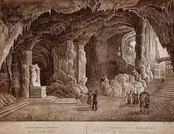

Sveta Jama
Saint Cave
Useful Information
| Location: | Near castle Socerb, 13km NNE from Koper, 2km from the road Koper-Kozina. |
| Open: |
Every Sunday at 14. [2007] |
| Fee: |
Adult SIT 500, Children SIT 300. [2003] |
| Classification: |
 Karst cave.
Cave Church Karst cave.
Cave Church |
| Light: | carbide lamps and electric torches. |
| Dimension: | L=200m, VR=44m. |
| Guided tours: | D=30min. |
| Photography: | |
| Accessibility: | |
| Bibliography: | |
| Address: |
Jamarsko društvo Dimnice (Caving Club Dimnice), p.p. 74, 6001 Koper.
Warden: Franci Maleèkar, Premanèan 28, 6280 Ankaran, Tel: +386-66-526036, Cell: +386-41-693014. |
| As far as we know this information was accurate when it was published (see years in brackets), but may have changed since then. Please check rates and details directly with the companies in question if you need more recent info. |
|
History
| 2007 | development of the cave with LED light. |
Description
|  |
| Image: an 18th centurz engraving of the cave church. |
In the entrance hall of Sveta Jama the only underground church of Slovenia is located. According to the legend Saint Servolus lived here for almost two years at the age of fourteen. He is a local Saint, who is adored all over this area. The cave is also dedicated to him and every year on the 24th of May the church is the place of a christian festival to his honour. Because of its extraordinary location this festivals were not possible during the existence of Yugoslavia, but since the independence of Slovenia the number of visitors form Slovenia, Croatia and Italy increases every year.
The cave is located nearly on top of a hill, below castle Socerb. This castle has an extraordinary view down to Trieste and on the sea. Only 50m from the top of the hill, to the left if coming from this direction, a single line gravel road starts, which may be a little rough for some cars. However, you may park on the hilltop and the walk to the cave is very pleasant.
The cave is marked by a shallow doline, about 20m in diameter. At one end a steep stair leads down into the cave and the cave is closed by massive iron bar gate. The stairs lead down into a large chamber, a small basin for the holy water is cut into the massive flowstone to the right hand side. The altar is on the opposite site in front of another formation.
The present altar is only provisional, the original which is visible on old photographs, was destroyed. It was shattered into small pieces which were thrown around the whole cave which also destroyed many of the huge stalagmites. It is not clear how and why this happend. The cave was not acessible during decades, as the Italian-Yugoslavian border was very close. The area was often patroled by Yugoslavian soldiers. This is proved by some graffities, which were made only a few weeks before the end of Yugoslavia. Probably those soldiers used the cave regularly as a shelter.
This cave is not really a nice place to stay. The entrance is of the ice cellar type, also called cold trap, which means an entrance at the top, which is entered by the cold air in winter, and no second entrance at the bottom. Cold air is flowing into the cave during winter, and so the cave is only about 8°C, pretty low for the geographic location. But there are some parts of the cave, passages going upwards, which are much warmer, approximately 14°C. Although a part of the right passage is called The Saints' Bed, he probably used a warmer part of the cave for sleeping.
The left branch is leading downwards and was once closed by a door. The door hole is still there. The part behind was used by the owners of the castle to store food, especially wine. A legend says, that all wine from this cave was sour, as it is not a good idea to use a church to store goods inside.
The cave is very small, only the main hall and three side passages are visited. The church has a paved floor, but the rest of the cave has no paths. Also there is no light despite the natural light falling into the main hall though a window high above. The guide provides carbide lamps and helmets, but it is a very good idea to wear good shoes and warm clothes. Also the visit is not recommended for people which are not able to walk on such rocky ground. However, everybody who is able to go down the stairs may visit the church.
Despite its small size and its poor development, this cave is of great
importance.
The bibliography of this cave is extremely long, including
Johann Weichard Frh. von Valvasor
who wrote several pages about this cave.
It was one of the first caves visited in the Karst in historic times.
Probably it is the oldest show cave, but there is no evidence as there are no
records.
The cave and the castle with its view are really worth a visit. As the cave is only open once a week on Sunday afternoon, a visit may pleasantly be combined with a lunch at the castle restaurant. At this restaurant some plates in the entrance show several explanations about the cave, including map and historic photographs.
The newest development is the new electric light created in 2007. The caving club, which manages the cave, decided to light it with new LED light. This light source is still expensive, but the cavew is small. On the other side the LEDs need very little energy and the last very long, so it won't be necessary to change bulbs for years. And the low amount of energy in the LED light reduces lampenflora. There is one other cave in Germany which was recently equipped with LEDs, but this is the first which is concequently lighted by LEDs only.
 Search Google for "Sveta Jama"
Search Google for "Sveta Jama" Google Earth Placemark
Google Earth Placemark Sveta jama
official website.
(
Sveta jama
official website.
( )
)